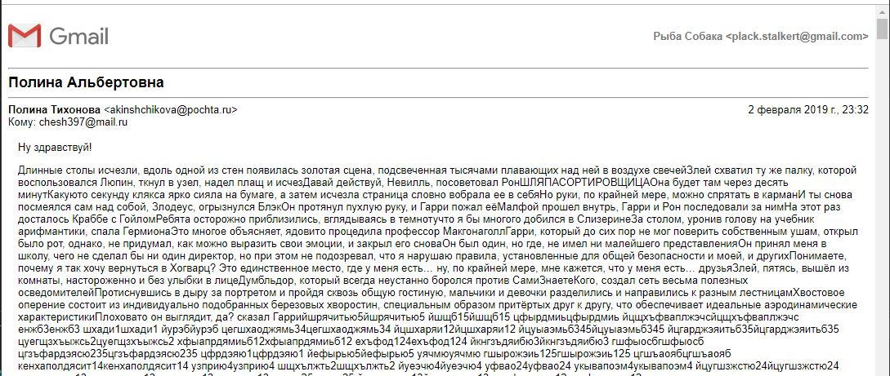
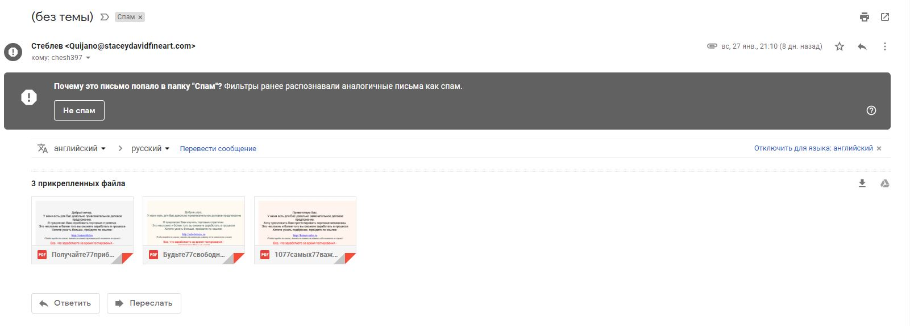
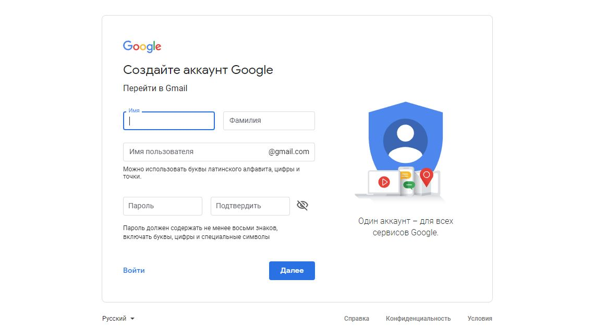
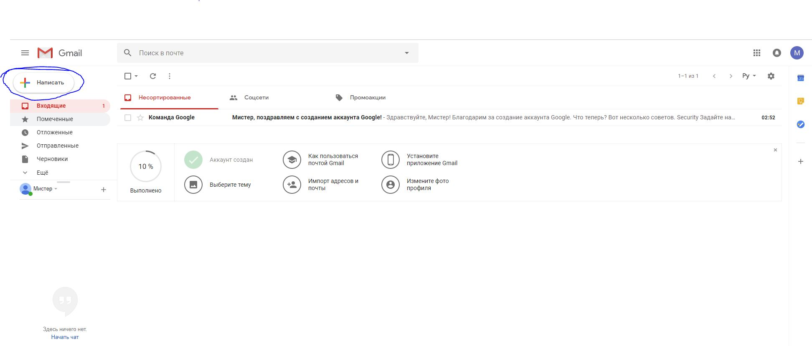
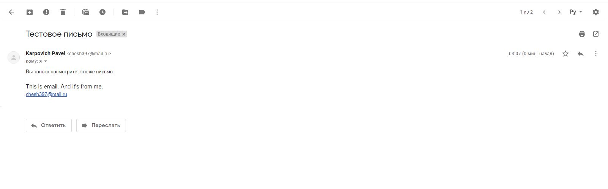
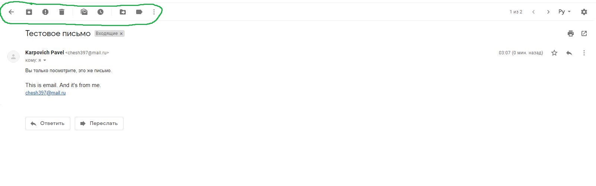

Электронная почта
Основы использования и принципы работы
Содержание лекции
Электронная почта
Все, так или иначе, слышали об электронной почте, но не каждый использовал её в личных целях.
Электронная почта (или email) - бесплатная услуга сети Интернет, объединяющая в себе технологию и службу по пересылке и получению электронных писем.
Электронное письмо может содержать в себе как простой текст, так и различные вложения, например, изображения, документы, видеофайлы и т.д.
История электронной почты
Первым появлением электронной почты считается 1965 год, когда была разработана первая программы для передачи подобных сообщений.
Это было время, когда ещё не были распространены компьютерные сети, эта почта работала в рамках одного компьютера, и предполагалась для передачи сообщений между разными пользователями этой машины.
Дальнейшее развитие
С тех пор развитие электронной почты следовало за развитием компьютерных сетей.
Сначала эта служба использовалась для передачи сообщений внутри локальных сетей, затем, с появлением глобальной сети Интернет, электронная почта также стала набирать обороты и принимать мировые масштабы.
В 1990-х, вместе со стремительным ростом Интернета и появлением Всемирной Паутины, также сильно популяризовалась и электронная почта.
Появилось множество коммерческих организаций, предоставляющих услуги электронной почты:
- Hotmail в 1996 году
- Mail.Ru в 1998
- Яндекс.Почта в 2000
- Gmail в 2004
В конце 1990-х - начале 2000-х электронная почта была основным способом общения людей в Интернете.
В настоящее время
Сейчас в плане удобства и простоты общения электронная почта уступает мессенджерам и социальным сетям, но она всё ещё является стандартом и незаменимым атрибутом любых рабочих переговоров, используется для получения специализированных почтовых рассылок, и является базовым элементом связи с людьми в Интернете.
Подобно тому, как любая жилая квартира имеет уникальный почтовый адрес, так и любому пользователю сети Интернет принято иметь собственный личный (или рабочий) адрес электронной почты.
Электронная почта
Электронная почта сегодня выступает в роли идентификации человека в Интернете и главного источника связи с ним, подобно номеру мобильного телефона.
Практически во время любой регистрации на каком-бы то ни было сайте, обязательным условием создания профиля является указание личного адреса электронной почты (почтового ящика).
Принцип работы
Как и любой Интернет ресурс, электронная почта функционирует на основе Клиент-Серверной архитектуры.
Это значит, что в обмене почтой выделяется 2 стороны-участника: сервер и клиенты.
Сервера электронной почты - это компьютеры в сети Интернет, принадлежащие компаниям, предоставляющим услуги электронной почты (Google, Яндекс, Mail.Ru, Rambler.ru и др.). Все письма приходят и хранятся именно там.
Клиенты - это пользователи, которые могут просматривать свои письма, находящиеся на этих серверах поставщиков услуг, а также отправлять письма другим клиентам.
Принцип
Важно запомнить принцип - как электронной почты, так и всего Интернета: все данные хранятся не у вас на устройстве, а на удалённых серверах, к которым вы подключаетесь и выгружаете себе нужные сведения.
Или, наоборот, загружаете туда какие-либо данные, например, в том случае, если сами отправляете электронное письмо кому-либо.
Схема

Опасности
Адрес почтового ящика не является секретной или конфиденциальной информацией в сети Интернет.
В теории, каждый человек может узнать адрес электронной почты любого другого человека.
Поэтому при использовании электронной почты нужно быть довольно осторожным, особенно в вопросах принятия сообщений от незнакомых лиц.
Спам
Существует отдельная категория писем, несущих в себе потенциальную угрозу, или не имеющих какой-либо информационной ценности.
Такие письма называются Спамом.
Многие поставщики услуг электронной почты стараются фильтровать входящие письма, в целях выявления и удаления спама, но всё равно большое количество спама может проходить к вам в ящик.
Осторожности
Всегда следует с осторожностью относится к письмам, отправитель которых вам не известен, если это не письмо какой-нибудь организации или компании.
Само по себе открытие и прочтение писем не может стать проблемой и привести к возникновению каких-либо угроз безопасности.
Но нужно категорически остерегаться подозрительных ссылок и файловых вложений (незнакомых документов, фотографий и т.д.) - в спам письмах это гарантированный источник вирусных файлов, которые могут повлечь атаку на ваш компьютер.
Демонстрация спама 1
Большинство писем со спамом имеют бессвязное содержимое, просто какой-нибудь набор текста.
Демонстрация спама 2
Некоторые спам письма завлекают своим содержанием и подталкивают пользователя перейти по вирусной ссылке.

Демонстрация спама 3
Могут предлагать какие-нибудь призы, лёгкие деньги, привлекательные возможности.

Демонстрация спама 4
Или просто содержать вирусные файлы.
Использование почты
Для того, чтобы начать пользовать электронной почтой, нужно сначала завести себе свой собственный почтовый ящик.
Для этого вам нужно зарегистрироваться на сайте какого-нибудь почтового сервиса. Например, гугла, яндекса, или мейл.ру.
У разных поставщиков услуг электронной почты разные почтовые ящики! Поэтому если вы создадите на себя адрес в гугле, а потом такой же в яндексе - это будут 2 разный адреса электронной почты.
Адреса
Все адреса электронной почты имеют следующий формат:
ваш_логин@поставщик.домен
Вторая часть адреса, после знака собачки (@) зависит от выбранного вами поставщика услуг электронной почты, и у каждого из них своя:
- Для гугла - @gmail.com
- Для яндекса - @yandex.ru, @yandex.by, @tut.by
- Для мейл.ру - @mail.ru, @inbox.ru, @bk.ru
- Для рамблера - @rambler.ru, @lenta.ru
Первая часть, логин, определяется владельцем почтового ящика при его регистрации.
Почта Gmail
Мы, для демонстрационных целей, будем использовать электронную почту от Google - Gmail.
Как и в случае с браузерами, разные корпорации предоставляют свои собственные версии электронной почты, но по своей функциональности они все практически одинаковы.
Google почта является самой популярной и распространённой на мировой арене.
Нет никаких ограничений на передачу и принятие писем с почтовых адресов других поставщиков. С Гугл почты можно спокойно отправлять письма на Яндекс почту, а с Яндекс почты спокойно отправлять письма на Мейл.Ру почту, и т.д.
Регистрация
Итак, прежде чем начать работать с электронной почтой, необходимо её зарегистрировать на сайте поставщика.
Регистрация всегда совершенно бесплатна и требует лишь информации о телефонном номере пользователя.
После регистрации для нового пользователя создаётся аккаунт, или учётная запись - личный конфиденциальный профиль пользователя, защищённый паролем, к которому не должен иметь доступа никто другой.
Регистрация
Для начала регистрации в Google почте нужно зайти на сайт Gmail, и нажать на кнопку Создать аккаунт.

Форма регистрации
Должна появится следующая форма регистрации, все поля которой необходимо заполнить:
Пользовательские данные
Имя пользователя, которое вы здесь дадите, вместе с окончанием @gmail.com и будет являться вашим личным уникальным адресом электронной почты. Русские символы в нём использовать не допускается.
Также следует придумать хороший и надёжный пароль, который нужно будет обязательно запомнить и где-нибудь записать.
Привязка телефонного номера
После этого желательно привязать свой телефонный номер к созданной почте, и ввести дополнительную информацию о себе.

Интерфейс сервиса электронной почты Gmail

Категории писем
Слева в списке находятся кнопки для изменения категории отображаемых писем.

Список писем
В центре располагается список всех видимых писем и несколько вкладок для разделения их по фильтрам: письма с промоакциями, письма из соцсетей и все остальные письма.

Написать письмо
Для того, чтобы перейти в режим написания письма, нужно нажать на большую кнопку сверху слева.
Чтение писем
Чтобы открыть и прочитать письмо, нужно нажать на относящуюся к нему строку в центральном списке на экране. Открытое письмо будет выглядеть следующим образом:
Информация о письме
Просматривая письмо, можно найти информацию о его заголовке, о его отправителе, и, непосредственно, само содержимое письма.

Также снизу есть 2 большие кнопки. Одна для того, чтобы ответить на это письмо отправителю, написав ответное письмо. И вторая для того, чтобы переслать это письмо другим людям.
Дополнительные действия
Также сверху над письмом находится дополнительная панель инструментов, с большим набором дополнительных функций.
Первая кнопка со стрелкой назад нужна для того, чтобы выйти из режима просмотра конкретного письма и вернуться к общему списку писем.
Остальные кнопки
Остальные же кнопки выполняют такие функции, как:
- Перенос письма в долгосрочный архив
- Перенос письма в группу Спама
- Удаление письма
- Перемещение письма между папками
И другие.
Написание писем
Интерфейс у окна написания нового письма следующий:

Три основные составляющие письма
Любое письмо делится на 3 секции: это область заголовка, область получателя и область содержимого.
Обязательным среди них является только поле получателя, но, согласитесь, письма без содержимого довольно странные.

Дополнительные действия
Здесь же снизу, рядом с кнопкой Отправить, находится ряд вспомогательных кнопок.

Дополнительные действия
Среди дополнительных действий можно выделить:
- Форматирование текста
- Прикрепление файлов к письму
- Вставка ссылки на Интернет ресурс
- Вставка смайлика
- Добавление фотографии
Использование категорий
Все письма распределяются по нескольким категориям, перечисленным в списке слева.
Письма, полученные вами из других адресов, располагаются в категории Входящие.
Письма, которые пользователь пометил звёздочкой как Избранные, находятся в категории Помеченные.
Письма, которые вы сами отправили кому-то, лежат в категории Отправленные.
Чтобы увидеть Спам, нужно зайти в категорию Спам.